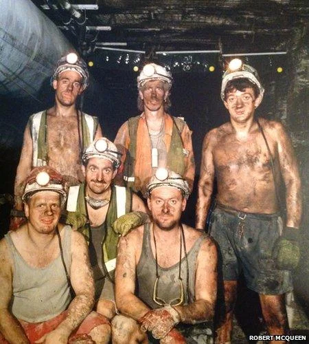
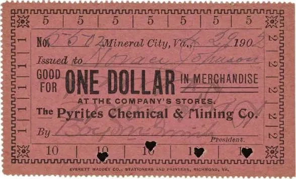
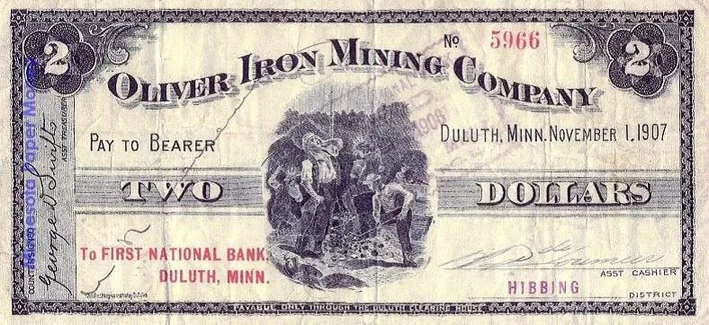
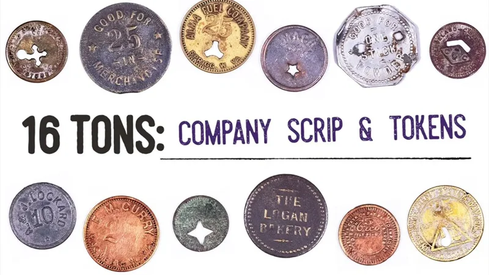
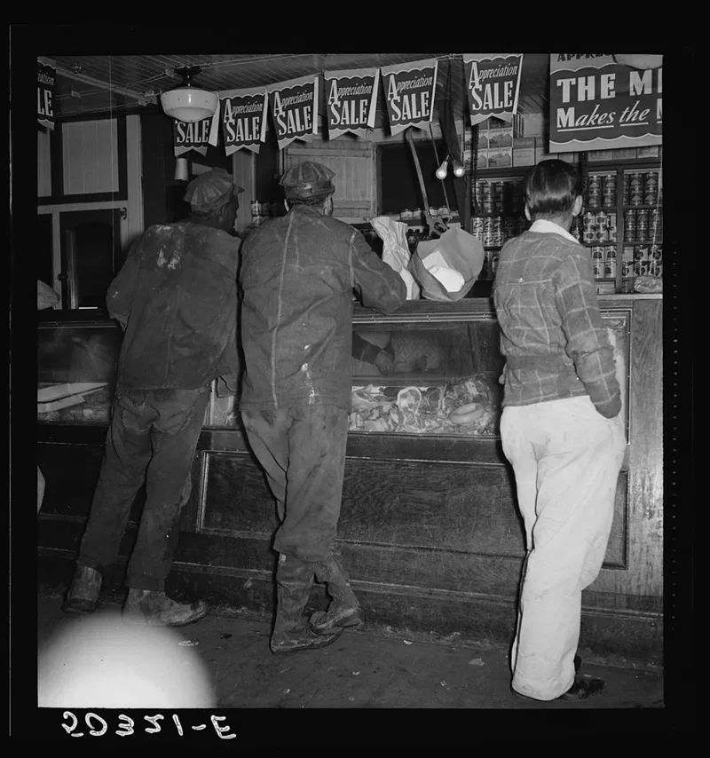
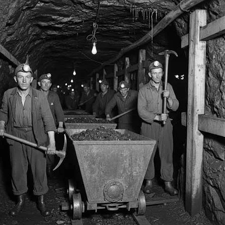

광부들의 삶은 동서고금 힘들기로 유명했다.
쥐꼬리만한 월급에 진폐증 등의 병을 달고 살았고
광부촌의 값비싼 물가, 광부 숙소 임대료 등 뜯기는 구석은 많았으니 말이다.



이런 광부들을 뜯어먹고 다른 곳으로 도망가는 걸 막기 위해 미국 광산회사들은 아주 치졸한 짓을 했는데,
"Company Scrip"이라 불리는 자체 화폐(토큰)를 월급으로 지급했다.

미국 내 수많은 광산회사들이 법정 화폐 대신 이런 토큰을 발행했으며,
이는 철저히 노동자를 종속시키고 착취하는 수단으로 악용되었다.
이 토큰은 광산회사에서 운영하는 회사 상점에서만 사용할 수 있었고
탄광촌은 대게 외딴곳에 있었기에 노동자들은 울며 겨자먹기로 회사 측이 말도 안되는 가격에 내놓은 음식, 잡화, 장비 등을 구매해야만 했다.
또한 법정 화폐인 달러로 바꾸려고 하면 회사 측에서 10~30% 이상의 막대한 수수료를 떼어갔다.

말하자면 노동자들이 다른곳으로 이동하지 못하게 만들고, 자산축적도 못하게 해 노예처럼 만들려는 의도였던 것이다.
이런 짓을 탄광회사들이 했다고 널리 알려져 있지만 벌목회사, 섬유회사, 수산물 가공회사, 대규모 농장 등
미국 내 외딴곳에 위치한 수많은 사업장에서 자체 화폐를 발행하였다.
우중충한 탄광마을에서 마을 중앙에 있는 회사상점 건물은 가장 크고 화려했는데,
식료품점과 정육점, 장비와 잡화점 등이 층마다 있었고
광부 하루 일당이 5달러였던 시절 이들 회사상점 매출이 100만 달러에 달했다고 한다.
이후 노동조합의 투쟁과 연방정부 노동법의 개정, 그리고 1930년대 뉴딜 정책의 일환으로 최저임금법 등이 제정되면서
임금의 현금 지급이 의무화되었고, 결국 이 토큰 제도는 1950년대 들어 역사 속으로 사라져갔다.
임금을 현금으로 지급해야 한다는 건 당연한 말 같지만, 사실 이것도 피로 쓰인 역사인 것이다.
-----
카이지 탄광이 일상이던 시기 ㄷㄷ
현실에서 공산주의는 저걸 국가단위로 하는건데
반항하면 굴라그 보내고
개인이 아무 결정권이 없으니 시키는대로 해야지. 그게 공산주의인걸